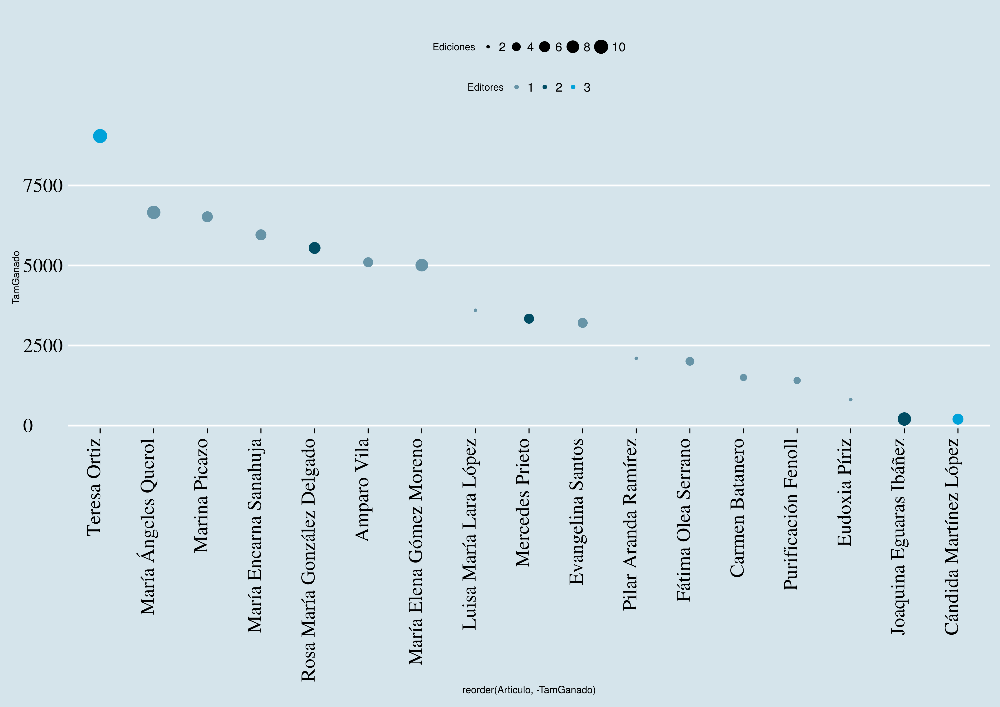

<!doctype html>
<html lang="en">

	<head>
		<meta charset="utf-8">

		<title>Editando la wikipedia/title>

		<meta name="description" content="Editatón de la semana de la educación abierta">
		<meta name="author" content="JJ Merelo">

		<meta name="apple-mobile-web-app-capable" content="yes">
		<meta name="apple-mobile-web-app-status-bar-style" content="black-translucent">

		<meta name="viewport" content="width=device-width, initial-scale=1.0, maximum-scale=1.0, user-scalable=no, minimal-ui">

		<link rel="stylesheet" href="css/reveal.css">
		<link rel="stylesheet" href="css/extra.css">
		<link rel="stylesheet" href="css/theme/white.css" id="theme">

		<!-- Code syntax highlighting -->
		<link rel="stylesheet" href="lib/css/zenburn.css">

		<!-- Printing and PDF exports -->
		<script>
			var link = document.createElement( 'link' );
			link.rel = 'stylesheet';
			link.type = 'text/css';
			link.href = window.location.search.match( /print-pdf/gi ) ? 'css/print/pdf.css' : 'css/print/paper.css';
			document.getElementsByTagName( 'head' )[0].appendChild( link );
		</script>

		<!--[if lt IE 9]>
		<script src="lib/js/html5shiv.js"></script>
		<![endif]-->
	</head>

	<body>

		<div class="reveal">

			<!-- Any section element inside of this container is displayed as a slide -->
			<div class="slides">
			  <section data-background='https://upload.wikimedia.org/wikipedia/commons/0/0b/OEWeekipedia.jpg' alt='Editando la wikipedia'>
			    <h1 class='bkg'>Editando la wikipedia</h1>
			  </section>

			  <section data-background='pantallazo.png'>
			    <h1 class='bkg'>Editatón</h1>
			  </section>

			  <section data-background='https://farm4.staticflickr.com/3412/3504341888_436fd20af7_o_d.jpg' alt='cinco pilares'>
			    <aside class='notes'><a href='https://es.wikipedia.org/wiki/Wikipedia:Los_cinco_pilares'>Punto de vista neutral, enciclopedia, no diccionario, ni promocional, ni nada de eso, contenido libre, normas de etiqueta, y sé valiente porque no hay más normas.</a></aside>
			  </section>

			  <section>
			    <h1>Mujeres + UGR en la Wikipedia</h1>
			    
			  </section>

			  <section>
			    <h1>¿Por qué?</h1>
			  </section>

			  <section>
			    <h1>WikiWomen</h1>
			    <h1 class='fragment'>Mujeres en STEM</h1>
			    <h2 class='fragment'>Cultura libre</h2>
			  </section>

			  <section>
			    
			  </section>

			  <section><h2>Credits</h2>
			    <p>Columnas por <a href='https://www.flickr.com/photos/75905404@N00/3504341888/'>Ozinoh en Flickr</a></p>
			  </section>

			</div>

		</div>

		<script src="lib/js/head.min.js"></script>
		<script src="js/reveal.js"></script>

		<script>

			// Full list of configuration options available at:
			// https://github.com/hakimel/reveal.js#configuration
			Reveal.initialize({
				controls: true,
				progress: true,
				history: true,
				center: true,

				transition: 'slide', // none/fade/slide/convex/concave/zoom

				// Optional reveal.js plugins
				dependencies: [
					{ src: 'lib/js/classList.js', condition: function() { return !document.body.classList; } },
					{ src: 'plugin/markdown/marked.js', condition: function() { return !!document.querySelector( '[data-markdown]' ); } },
					{ src: 'plugin/markdown/markdown.js', condition: function() { return !!document.querySelector( '[data-markdown]' ); } },
					{ src: 'plugin/highlight/highlight.js', async: true, callback: function() { hljs.initHighlightingOnLoad(); } },
					{ src: 'plugin/zoom-js/zoom.js', async: true },
					{ src: 'plugin/notes/notes.js', async: true }
				]
			});

		</script>

	</body>
</html>
